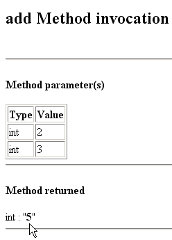
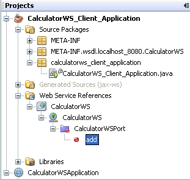
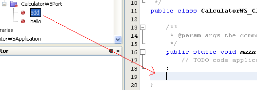

Apache NetBeans
Apache NetBeansLatest release
Introdução aos Web services JAX-WS
| This tutorial needs a review. You can edit it in GitHub following these contribution guidelines. |
Java API para Web services XML (JAX-WS), JSR 224 é uma parte importante das plataforma Java EE. Uma sequência da release da API Java para RPC 1.1 (JAX-RPC) com base em XML, o JAX-WS simplifica a tarefa de desenvolvimento de Web services utilizando a tecnologia Java. Ela aborda alguns dos problemas em JAX-RPC 1.1, fornecendo suporte a vários protocolos, como SOAP 1.1, SOAP 1.2, XML, e fornecendo um recurso para dar suporte a protocolos adicionais junto com HTTP. O JAX-WS usa JAXB 2.0 para vinculação de dados e dá suporte a personalizações para controlar interfaces de ponto final de serviço geradas. Com suporte a anotações, o JAX-WS simplifica o desenvolvimento do Web service e reduz o tamanho de arquivos JAR do run-time.
Este documento demonstra os conceitos básicos sobre o uso do IDE para desenvolver um Web service JAX-WS. Após criar o Web service, você escreve três clientes de Web service diferentes que usam Web service em uma rede, denominado "consumo" de um Web service. Os três clientes são uma classe Java em uma aplicação Java SE, um servlet e uma página JSP em uma aplicação Web. Um tutorial mais avançado que se concentra em clientes é Desenvolvendo Clientes de Web Service JAX-WS.

Figure 1. O conteúdo desta página se aplica ao NetBeans IDE 7.2, 7.3, 7.4 e 8.0
-
Consumindo o Web Service em
Para seguir este tutorial, são necessários os recursos e o software a seguir.
| Software ou Recurso | Versão Necessária |
|---|---|
Pacote de download do Java EE |
|
JDK 7 ou JDK 8 |
|
Servidor de aplicações ou Web compatível com Java EE |
GlassFish Server Open Source Edition Oracle WebLogic Server |
*Observação: *o GlassFish Server pode ser instalado com a distribuição de Java EE do NetBeans IDE. Como alternativa, você pode visitar a página de downloads do GlassFish Server ou a página de downloads do Apache Tomcat.
*Importante: *os projetos Java EE requerem GlassFish Server ou Oracle WebLogic Server 12c.
O servidor web de Tomcat incorporado não é um servidor web totalmente compatível com Java EE. No entanto, o servidor web Tomcat 7.x pode ser configurado para suportar alguma funcionalidade de Java EE. Consulte o Projeto Apache para EE para obter informações sobre como adicionar suporte ao Java EE para Tomcat.
Criando um Web Service
O objetivo deste exercício é criar um projeto apropriado para o contêiner de implantação que você decidir utilizar. Uma vez criado o projeto, você irá criar nele um Web service.
Escolhendo um Contêiner
Você pode implantar o Web service em um contêiner Web ou em um contêiner EJB. Isso depende das suas escolhas de implementação. Se estiver criando uma aplicação Java EE, use um contêiner Web, pois você pode colocar EJBs diretamente em uma aplicação Web. Por exemplo, se você planeja implantar no Servidor Web Tomcat, que tem somente um contêiner Web, crie uma aplicação Web, não um módulo EJB.
-
Selecione Arquivo > Novo Projeto (Ctrl-Shift-N no Linux e no Windows, ⌘-Shift-N no MacOS). Selecione Aplicação Web na categoria Java Web ou Módulo EJB na categoria Java EE.
Você pode criar um Web service JAX-WS em um projeto Maven. Selecione Arquivo > Novo Projeto (Ctrl-Shift-N no Linux e no Windows, ⌘-Shift-N no MacOS) e o módulo Aplicação Web Maven ou Maven EJB na categoria Maven. Se você nunca tiver usado Maven com NetBeans antes, consulte Melhores Práticas para o Maven.
-
Nomeie o projeto
CalculatorWSApplication. Selecione uma localização para o projeto. Clique em Próximo.
-
Selecione o servidor e a versão do Java EE e clique em Finalizar.
Para usar o Oracle WebLogic server, registre o servidor no IDE. Além disso, se você estiver usando o WebLogic server, observe a screencast em Implantando uma Aplicação Web para Oracle WebLogic.
Criando um Web Service com base em uma Classe Java
-
Clique com o botão direito do mouse no nó
CalculatorWSApplicatione selecione Novo > Web Service. -
Chame o Web service de
CalculatorWSe digiteorg.me.calculatorno Pacote. Deixe Criar Web Service do Início selecionado. -
Se você estiver criando um projeto Java EE em GlassFish ou WebLogic, selecione Implementar Web Service como um Bean de Sessão Sem Estado.

-
Clique em Finalizar. A janela Projetos exibirá a estrutura do novo Web service e o código-fonte será mostrado na área do editor.
Adicionando uma Operação ao Web service
O objetivo deste exercício é adicionar ao Web service uma operação que adiciona dois números recebidos de um cliente. O NetBeans IDE oferece uma caixa de diálogo para adicionar uma operação a um Web service. Você pode abrir essa caixa de diálogo no visual designer para Web service ou no menu de contexto do Web service.
Advertência: o visual designer não está disponível em projetos Maven.
Para adicionar uma operação ao Web service:
-
Ou:
-
Altere a view do Design no editor.
-

Ou:
-
Localize o nó do Web service na janela Projetos. Clique com o botão direito do mouse no nó. Aparecerá um menu de contexto.

-
Clique em Adicionar Operação no designer visual ou no menu de contexto. A caixa de diálogo Adicionar Operação será aberta.
-
Na parte superior da caixa de diálogo Adicionar Operação, digite
addem Nome e digiteintna lista drop-down Tipo de Retorno.
-
Na parte inferior da caixa de diálogo Adicionar Operação, clique em Adicionar e crie um parâmetro de tipo
intchamadoi.
-
Clique novamente em Adicionar e crie um parâmetro de tipo
intchamado dej.
Agora você deverá ver o seguinte:

-
Clique em OK na parte inferior da caixa de diálogo Adicionar Operação. Você retornará ao editor.
-
Remova a operação
hellodefault deletando o métodohello()no código-fonte ou selecionando a operaçãohellono visual designer e clicando em Remover Operação.
O visual designer agora exibe o seguinte:

Figure 2. Visual designer do Web service que mostra operação adicionada
-
Clique em Código-Fonte e exiba o código que você gerou nas etapas anteriores. Será diferente se você tiver criado o serviço como um bean sem estado Java EE6 ou não. Você pode perceber as diferenças das telas abaixo? (Um serviço Java EE 6 ou Java EE 7 que não é implementado como bean sem estado parece um serviço Java EE 5.)
![] image::images/stateless-ejb-code1.png[](images/jaxws-60-source.png)
Observação. No NetBeans IDE 7.3 e 7.4 você verá que na anotação @WebService gerada, o nome do serviço é especificado explicitamente:
@WebService(serviceName = "CalculatorWS") .
-
No editor, estenda a operação de esqueleto
addpara o seguinte (alterações em negrito):
@WebMethod
public int add(@WebParam(name = "i") int i, @WebParam(name = "j") int j) {
*int k = i + j;*
return *k*;
}Como você pode ver no código acima, o Web service simplesmente recebe dois números e retorna a soma deles. Na próxima seção, você usa o IDE para testar o Web service.
Implantando e Testando o Web service
Depois de implantado um Web service em um servidor, você poderá usar o IDE para abrir o cliente de teste do servidor, caso ele tenha um cliente de teste. Os servidores GlassFish e WebLogic oferecem clientes de teste.
Se você estiver usando o servidor Web Tomcat, não haverá cliente de teste. Você só poderá executar o projeto e ver se a página de web services do Tomcat é aberta. Nesse caso, antes de executar o projeto, é preciso tornar o web service o ponto de entrada da aplicação. Para tornar o web service o ponto de entrada da aplicação, clique com o botão direito do mouse no nó do projeto CalculatorWSApplication e selecione Propriedades. Abra as propriedades de Executar e digite /CalculatorWS no campo URL Relativo. Clique em OK. Para executar o projeto, clique com o botão direito do mouse no nó do projeto novamente e selecione Executar.
*Para testar a implantação bem-sucedida em um servidor GlassFish Server ou WebLogic: *
-
Clique com o botão direito do mouse no projeto e selecione Implantar. O IDE inicia o servidor de aplicações, constrói a aplicação e a implanta no servidor. Você pode acompanhar o progresso dessas operações no CalculatorWSApplication (run-deploy) e nas guias do GlassFish Server ou Tomcat na view Saída.
-
Na guia Projetos do IDE, expanda o nó Web Services do projeto CalculatorWSApplication. Clique com o botão direito do mouse no nó CalculatorWS e selecione Testar Web Service.

O IDE abrirá a página de teste em seu browser, se você tiver implantado uma aplicação Web no GlassFish Server. Para o servidor Web Tomcat e a implantação de módulos EJB, a situação é diferente:
-
Se você tiver implantado no GlassFish Server, digite dois números na página de teste, como mostrado abaixo:

A soma dos dois números é exibida:

Você pode abrir uma versão completa do bean sem estado Java EE do serviço Calculadora selecionando Arquivo > Novo Projeto (Ctrl-Shift-N no Linux e no Windows, ⌘-Shift-N no MacOS) e navegar até Amostras > Web Services Java > Calculadora (EE6).
Um Serviço de Calculadora Maven e um Cliente de Calculadora Maven estão disponíveis em Amostras > Maven.
Consumindo o Web Service
Agora que você implantou o Web service, precisará criar um cliente para utilizar o método add do Web service. Aqui, você cria três clientes — uma classe Java em uma aplicação Java SE, um servlet e uma página JSP em uma aplicação Web.
Observação: um tutorial mais avançado que se concentra nos clientes é Desenvolvendo Clientes de Web Service JAX-WS.
Cliente 1: Classe Java na Aplicação Java SE
Nesta seção, você cria uma aplicação Java padrão. O assistente usado para criar a aplicação também criará uma classe Java. Em seguida, você usa as ferramentas do IDE para criar um cliente e consumir o Web service que criou no início deste tutorial.
-
Selecione Arquivo > Novo Projeto (Ctrl-Shift-N no Linux e no Windows, ⌘-Shift-N no MacOS). Selecione Aplicação Java na categoria Java. Nomeie o projeto
CalculatorWS_Client_Application. Deixe a opção Criar Classe Principal selecionada e aceite todas as outras definições default. Clique em Finalizar. -
Clique com o botão direito do mouse no nó
CalculatorWS_Client_Applicatione selecione Novo > Cliente de Web Service. O assistente de Novo Cliente de Web Service será aberto. -
Selecione Projeto como o código-fonte WSDL. Clique em Procurar. Procure o Web service CalculatorWS no projeto CalculatorWSApplication. Depois de ter selecionado o Web service, clique em OK.

-
Não selecione um nome de pacote. Deixe este campo vazio.

-
Deixe as outras definições como default e clique em Finalizar.
A janela Projetos exibirá o novo cliente de Web service, com um nó para o método add que você criou:

-
Clique duas vezes na classe principal para abri-la no Editor de Código-Fonte. Arraste o nó
adicionarabaixo do métodomain().

Agora você deverá ver o seguinte:
public static void main(String[] args) {
// TODO code application logic here
}
private static int add(int i, int j) {
org.me.calculator.CalculatorWS_Service service = new org.me.calculator.CalculatorWS_Service();
org.me.calculator.CalculatorWS port = service.getCalculatorWSPort();
return port.add(i, j);
}Observação: como alternativa, em vez de arrastar o nó adicionar , você pode clicar com o botão direito do mouse no editor e, em seguida, selecionar Inserir Código > Operação de Chamada a Web service.
-
No corpo do método
main(), substitua o comentário TODO com o código que inicializa os valores deiej, chamaadd()e mostra o resultado.
public static void main(String[] args) {int i = 3;int j = 4;int result = add(i, j);System.out.println("Result = " + result);
}-
Circunde o código do método
main()com um bloco try/catch que imprime uma exceção.
public static void main(String[] args) {try {int i = 3;int j = 4;int result = add(i, j);System.out.println("Result = " + result);} catch (Exception ex) {System.out.println("Exception: " + ex);}
}-
Clique com o botão direito do mouse no nó do projeto e selecione Executar.
A janela de Saída agora mostra a soma:
compile:
run:
Result = 7
BUILD SUCCESSFUL (total time: 1 second)Cliente 2: Servlet na Aplicação Web
Nesta seção, você cria uma nova aplicação Web e, depois disso, cria um servlet. Em seguida, usa o servlet para consumir o Web service que criou no início deste tutorial.
-
Selecione Arquivo > Novo Projeto (Ctrl-Shift-N no Linux e no Windows, ⌘-Shift-N no MacOS). Na categoria Java Web, selecione Aplicação Web. Nomeie o projeto
CalculatorWSServletClient. Clique em Próximo e, em seguida, em Finalizar. -
Clique com o botão direito do mouse no nó
CalculatorWSServletCliente selecione Novo > Cliente de Web Service.
O assistente de Novo Cliente de Web Service será aberto.
-
Selecione Projeto como origem WSDL e clique em Procurar para abrir a caixa de diálogo Procurar Web Services.
-
Selecione o web service CalculatorWS no projeto CalculatorWSApplication. Clique em OK para fechar a caixa de diálogo Procurar Web Services.
-
Confirme se o nome do pacote está vazio no assistente de Novo Cliente de Web Service e deixe as outras definições com o valor padrão. Clique em Finalizar.
O nó Referências de Web Service na janela Projetos exibe a estrutura do cliente recém-criado, que inclui a operação add que você criou anteriormente neste tutorial.
-
Clique com o botão direito do mouse no nó do projeto
CalculatorWSServletCliente selecione Novo > Servlet. Chame o servlet deClientServlete coloque-o em um pacote chamadoorg.me.calculator.client. Clique em Finalizar.
-
Para tornar o servlet o ponto de entrada da aplicação, clique com o botão direito do mouse no nó do projeto CalculatorWSServletClient e selecione Propriedades. Abra as propriedades de Executar e digite
/ClientServletno campo URL Relativo. Clique em OK.
-
Se houver ícones de erro em
ClientServlet.java, clique com o botão direito do mouse no nó do projeto e selecione Limpar e Construir.
-
No método
processRequest(), adicione algumas linhas vazias depois desta linha:
out.println("<h1>Servlet ClientServlet at " + request.getContextPath () + "</h1>");-
No Editor de Código-Fonte, arraste a operação
adicionarem qualquer lugar do corpo da classeClientServlet. O métodoadd()aparecerá ao final do código da classe.
Observação: como alternativa, em vez de arrastar o nó adicionar , você pode clicar com o botão direito do mouse no editor e, em seguida, selecionar Inserir Código > Operação de Chamada a Web service.
private int add(int i, int j) {org.me.calculator.CalculatorWS port = service.getCalculatorWSPort();return port.add(i, j);
}-
Adicione o código que inicializa os valores de
iej, chamaadd()e imprime o resultado. O código adicionado está em negrito:
protected void processRequest(HttpServletRequest request, HttpServletResponse response)
throws ServletException, IOException {
response.setContentType("text/html;charset=UTF-8");
PrintWriter out = response.getWriter();
try {
out.println("<html>");
out.println("<head>");
out.println("<title>Servlet ClientServlet</title>");
out.println("</head>");
out.println("<body>");
out.println("<h1>Servlet ClientServlet at " + request.getContextPath () + "</h1>");
* int i = 3;
int j = 4;
int result = add(i, j);
out.println("Result = " + result);*
out.println("</body>");
out.println("</html>");
} finally { out.close();}}-
Circunde o código adicionado com um bloco try/catch que imprime uma exceção.
protected void processRequest(HttpServletRequest request, HttpServletResponse response)
throws ServletException, IOException {
response.setContentType("text/html;charset=UTF-8");
PrintWriter out = response.getWriter();
try {
out.println("<html>");
out.println("<head>");
out.println("<title>Servlet ClientServlet</title>");
out.println("</head>");
out.println("<body>");
out.println("<h1>Servlet ClientServlet at " + request.getContextPath () + "</h1>");
*try {*
int i = 3;int j = 4;int result = add(i, j);out.println("Result = " + result);
*} catch (Exception ex) {
out.println("Exception: " + ex);
}*
out.println("</body>");
out.println("</html>");
} finally { out.close();}}-
Clique com o botão direito do mouse no nó do projeto e selecione Executar.
O servidor será iniciado, a aplicação será construída e implantada e o browser será aberto, exibindo o resultado do cálculo, como mostrado abaixo:

Cliente 3: Página JSP na Aplicação Web
Nesta seção, você cria uma nova aplicação Web e, em seguida, consome o Web service na página JSP default que o assistente Aplicação Web cria.
Observação: se você quiser executar um cliente de aplicação Web JSP em Oracle WebLogic, consulte Executando uma Aplicação Java Server Faces 2.0 em WebLogic.
-
Selecione Arquivo > Novo Projeto (Ctrl-Shift-N no Linux e no Windows, ⌘-Shift-N no MacOS). Na categoria Java Web, selecione Aplicação Web. Nomeie o projeto
CalculatorWSJSPClient. Clique em Próximo e, em seguida, em Finalizar. -
Expanda o nó Páginas Web sob o nó do projeto e exclua
index.html. -
Clique com o botão direito do mouse no nó
Páginas Webe escolha Novo > JSP no menu pop-up.
Se JSP não estiver disponível no menu pop-up, escolha Novo > Outro e selecione JSP na categoria Web do assistente de Novo Arquivo.
-
Digite index como nome do arquivo JSP no assistente de Novo Arquivo. Clique em Finalizar.
-
Clique com o botão direito do mouse no nó
CalculatorWSJSPCliente selecione Novo > Cliente de Web service.
-
Selecione Projeto como o código-fonte WSDL. Clique em Procurar. Procure o Web service CalculatorWS no projeto CalculatorWSApplication. Depois de ter selecionado o Web service, clique em OK.
-
Não selecione um nome de pacote. Deixe este campo vazio.
-
Deixe as outras definições como default e clique em Finalizar.
A janela Projetos exibe o novo cliente de web service, como mostrado abaixo:

-
No nó Referências de Web Services, expanda o nó que representa o Web service. A operação
adicionar, que você chamará do cliente, agora está exposta.
-
Arraste a operação
adicionarpara a páginaindex.jspdo cliente e solte-a abaixo das tags H1. O código para chamar a operação de serviço agora é gerado na páginaindex.jsp, como você pode ver aqui:
<%
try {
org.me.calculator.CalculatorWSService service = new org.me.calculator.CalculatorWSService();
org.me.calculator.CalculatorWS port = service.getCalculatorWSPort();
// TODO initialize WS operation arguments here
int i = 0;
int j = 0;
// TODO process result here
int result = port.add(i, j);
out.println("Result = "+result);
} catch (Exception ex) {
// TODO handle custom exceptions here
}
%>Altere o valor de i e j de 0 por outros inteiros, como 3 e 4. Substitua a linha TODO comentada no bloco catch por out.println("exception" + ex); .
-
Clique com o botão direito do mouse no nó do projeto e selecione Executar.
O servidor será iniciado, caso já não esteja em execução. A aplicação será construída e implantada e o browser será aberto, exibindo o resultado do cálculo:

Consulte Também
Para obter mais informações sobre o uso do NetBeans IDE para desenvolver aplicações Java EE, consulte os seguintes recursos:
Para enviar comentários e sugestões, obter suporte e se manter informado sobre os mais recentes desenvolvimentos das funcionalidades de desenvolvimento Java EE do NetBeans IDE, inscreva-se na lista de notícias nbj2ee@netbeans.org.